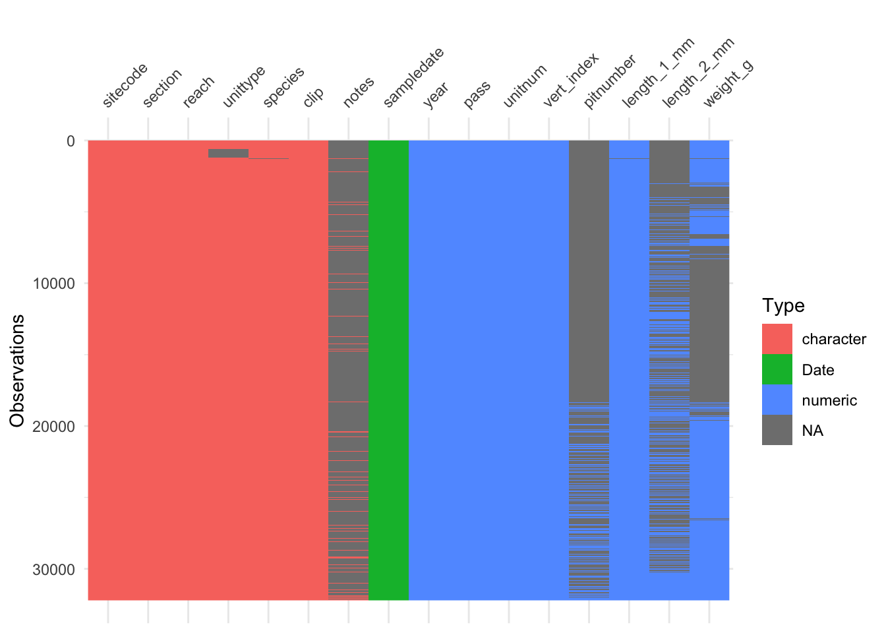
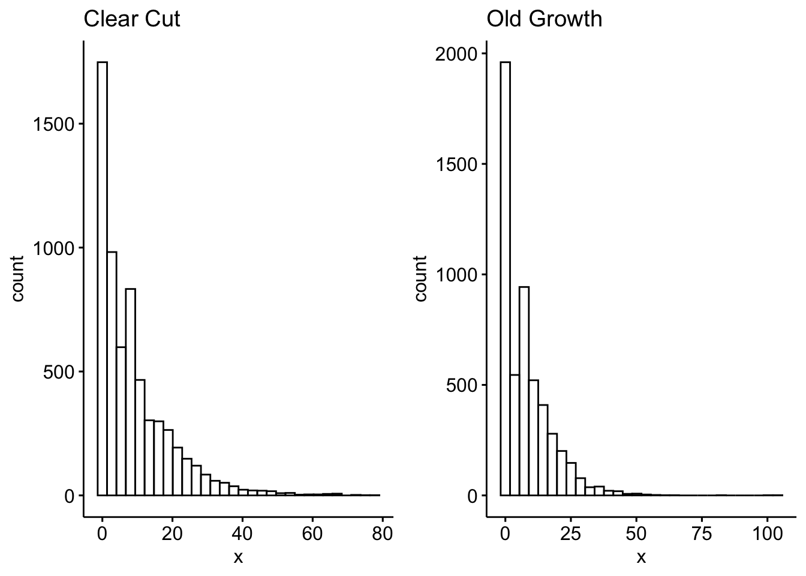
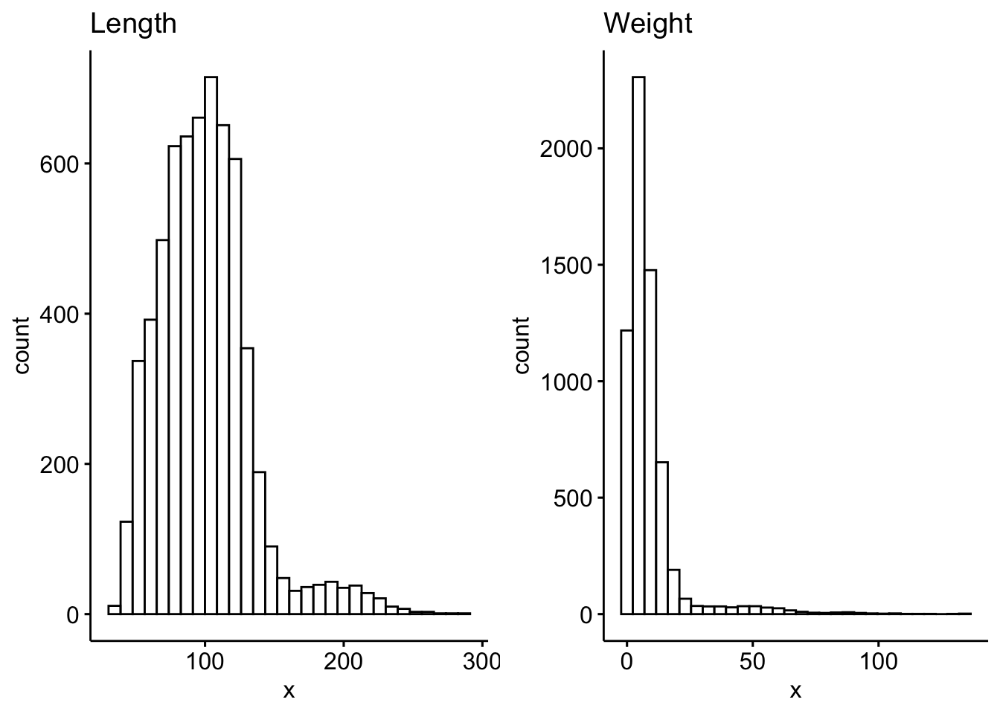

Skipping install of 'lterdatasampler' from a github remote, the SHA1 (ff784768) has not changed since last install.
Use `force = TRUE` to force installation
── Conflicts ────────────────────────────────────────── tidyverse_conflicts() ──
✖ dplyr::filter() masks stats::filter()
✖ dplyr::lag() masks stats::lag()
ℹ Use the conflicted package (<http://conflicted.r-lib.org/>) to force all conflicts to become errors
Loading required package: carData
Attaching package: 'car'
The following object is masked from 'package:dplyr':
recode
The following object is masked from 'package:purrr':
some
# A tibble: 7 × 2
unittype n
<chr> <int>
1 C 11419
2 I 23
3 IP 105
4 P 5470
5 R 420
6 S 9
7 SC 2377
vis_dat(and_vertebrates)

# First clean the dataset to create the contingency table fromtrout_clean <- and_vertebrates |>#filter Cutthroat troutfilter(species =="Cutthroat trout") |># lets test using just the 3 most abundant unittypesfilter(unittype %in%c("C", "P", "SC")) |># drop NAs for both unittype and sectiondrop_na(unittype, section)cont_table <-table(trout_clean$section, trout_clean$unittype)chisq.test(cont_table)
trout_clean |>count(unittype, section) |> ggpubr::ggbarplot(x ='unittype', y ='n', fill ='section', palette =c("#00AFBB", "#E7B800"),add ="mean_se")
Warning in stats::qt(ci/2 + 0.5, data_sum$length - 1): NaNs produced
Warning in stats::qt(ci/2 + 0.5, data_sum$length - 1): NaNs produced
Warning in stats::qt(ci/2 + 0.5, data_sum$length - 1): NaNs produced
Warning in stats::qt(ci/2 + 0.5, data_sum$length - 1): NaNs produced
Warning in stats::qt(ci/2 + 0.5, data_sum$length - 1): NaNs produced
Warning in stats::qt(ci/2 + 0.5, data_sum$length - 1): NaNs produced
F test to compare two variances
data: cc_weight and og_weight
F = 1.2889, num df = 6310, denom df = 5225, p-value < 2.2e-16
alternative hypothesis: true ratio of variances is not equal to 1
95 percent confidence interval:
1.223686 1.357398
sample estimates:
ratio of variances
1.288892
ggpubr::ggarrange(ggpubr::gghistogram(cc_weight, main ="Clear Cut"), ggpubr::gghistogram(og_weight, main ="Old Growth"))
Warning: Using `bins = 30` by default. Pick better value with the argument
`bins`.
Warning: Using `bins = 30` by default. Pick better value with the argument
`bins`.
Warning: Removed 4273 rows containing non-finite outside the scale range
(`stat_bin()`).
Warning: Removed 3456 rows containing non-finite outside the scale range
(`stat_bin()`).

var.test(log(cc_weight), log(og_weight))
F test to compare two variances
data: log(cc_weight) and log(og_weight)
F = 1.0208, num df = 6310, denom df = 5225, p-value = 0.4374
alternative hypothesis: true ratio of variances is not equal to 1
95 percent confidence interval:
0.9691443 1.0750427
sample estimates:
ratio of variances
1.020787
var.test(log(cc_weight), log(og_weight))
F test to compare two variances
data: log(cc_weight) and log(og_weight)
F = 1.0208, num df = 6310, denom df = 5225, p-value = 0.4374
alternative hypothesis: true ratio of variances is not equal to 1
95 percent confidence interval:
0.9691443 1.0750427
sample estimates:
ratio of variances
1.020787
Two Sample t-test
data: log(trout_clean$weight_g) by trout_clean$section
t = 2.854, df = 11535, p-value = 0.004324
alternative hypothesis: true difference in means between group CC and group OG is not equal to 0
95 percent confidence interval:
0.02222425 0.11969560
sample estimates:
mean in group CC mean in group OG
1.457042 1.386082
Welch Two Sample t-test
data: trout_clean$weight_g by trout_clean$section
t = 4.5265, df = 11491, p-value = 6.056e-06
alternative hypothesis: true difference in means between group CC and group OG is not equal to 0
95 percent confidence interval:
0.4642016 1.1733126
sample estimates:
mean in group CC mean in group OG
8.988807 8.170050
sally_clean <- and_vertebrates |>filter(species =="Coastal giant salamander") |>drop_na(length_2_mm, weight_g)ggarrange(gghistogram(sally_clean$length_2_mm, title ="Length"),gghistogram(sally_clean$weight_g, title ="Weight"))
Warning: Using `bins = 30` by default. Pick better value with the argument
`bins`.
Warning: Using `bins = 30` by default. Pick better value with the argument
`bins`.

s <- sally_clean |>slice_sample(n =5000) shapiro.test(s$length_2_mm)
Shapiro-Wilk normality test
data: s$length_2_mm
W = 0.93304, p-value < 2.2e-16
shapiro.test(s$weight_g)
Shapiro-Wilk normality test
data: s$weight_g
W = 0.5543, p-value < 2.2e-16
ggarrange(gghistogram(log(sally_clean$length_2_mm), title ="Length"), gghistogram(log(sally_clean$weight_g), title ="Weight") )
Warning: Using `bins = 30` by default. Pick better value with the argument
`bins`.
Warning: Using `bins = 30` by default. Pick better value with the argument
`bins`.
Warning in cor.test.default(sally_clean$length_2_mm, sally_clean$weight_g, :
Cannot compute exact p-value with ties
Spearman's rank correlation rho
data: sally_clean$length_2_mm and sally_clean$weight_g
S = 819296957, p-value < 2.2e-16
alternative hypothesis: true rho is not equal to 0
sample estimates:
rho
0.9796802